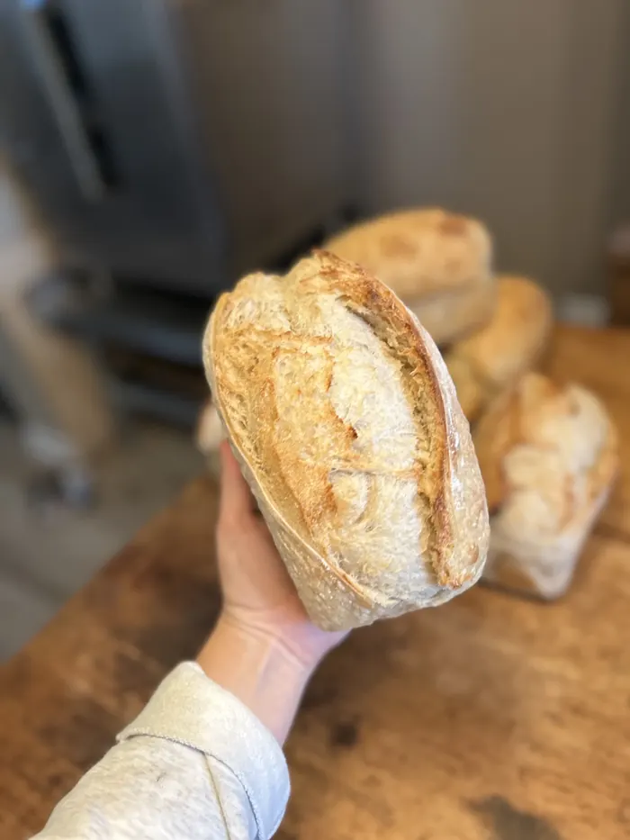

The staples
Classic Organic Sourdough
The everyday loaf. Organic flour, water, organic sourdough starter and pink Himalayan salt. That's it.
Organic Sandwich Loaf
The classic plus organic extra virgin olive oil and wildflower honey for a softer crumb, baked in a loaf pan for easy slicing.